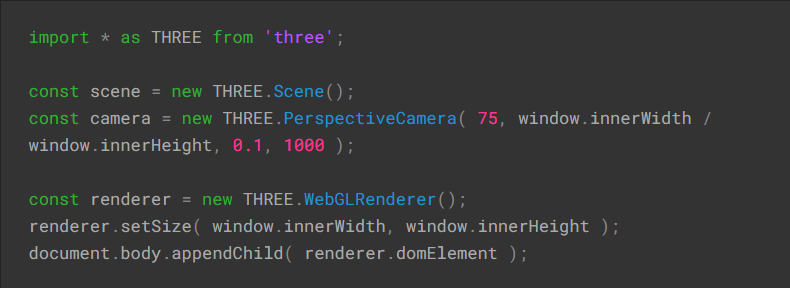
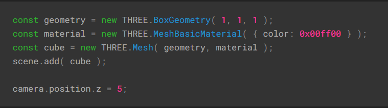
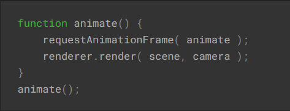

THREE.JS
JavaScript biblioteka za 3D modelovanje
Spajanje WebGL i JavaScripta
📜 Uvod
Ova biblioteka omogućava razvoj interaktivnih 3D grafika direktno u web stranicama, bez potrebe za dodatnim pluginima ili eksternim programima. Three.js pruža bogat set funkcija i alata za kreiranje raznovrsnih 3D scena, modela i animacija.
Three.js je popularan među web developerima koji žele dodati 3D vizualizaciju ili interaktivne igrice u svoje web stranice. Budući da se oslanja na WebGL, radi na većini modernih web pregledača, uključujući Google Chrome, Mozilla Firefox, Safari i druge.
⚙ Tehnologije
Sama postavka projekta je veoma laka; najlakši način bi bio upotrebom npm-a i/ili neke druge vrste package-control menadžmenta kao što je Vite. Izabrani text editor je Visual Studio Code, a pored HTML-a i CSS-a nam neće više ništa biti potrebno.
Kako se biblioteka zasniva na Vanilla JavaScriptu, tako se aplikacija može napraviti i u drugim bibliotekama kao što je React.js ili u nekom drugom frameworku poput Vue, Svelte, Angular...
Priprema projekta
Prvobitno treba instalirati biblioteku, preko npm-a i komande npm install --save three, ili upotrebom CDN linkova. Preciznije uputstvo možete pogledati OVDE
Podržana implementacija 3D modela iz Blendera
📜 Osnovne postavke i funkcije
Scena
Da bismo prikazali bilo šta, potrebne su nam tri osnovne komponente: Scena, Kamera i Renderer, kako bismo renderovali scenu, gledanu kroz kameru.
Ukratko, PerspectiveCamera je jedna od vrsta kamera u three.js gde se kamera ponaša kao ljudsko oko. Parametri konstruktora su FOV/Ugao gledanja, aspect ratio, near i far. Ugao gledanja se predstavlja stepenima, razmeru je najlakše namestiti prema korisničkom ekranu, a near i far određuju renderovanje bližih u odnosu na dalje objekte, ali ovo za sada nije toliko bitno.
Sledeća stavka je Renderer. Da bismo ga kreirali, takođe moramo postaviti visinu i širinu u kojoj ćemo renderovati aplikaciju. Poslednja linija koda nam povezuje render sa HTML dokumentom. HTML koristi canvas za prikaz.
Osnovni elementi
Svaki element se pravi spajanjem geometrije i materijala. Svaka geometrija ima zasebne konstruktore. Za materijale takođe postoji puno opcija, uz koje se može dodati boja, custom tekstura ili reljef. Na kraju se oni spajaju upotrebom THREE.Mesh()
Svaki element se mora dodati na scenu, korišćenjem funkcije Scene.add()
Prikaz scene
Prikaz scene se vrši kreiranjem funkcije, sličnoj setInterval(), koja refrešuje ekran 60 puta u sekundi, korišćenjem funkcije requestAnimationFrame(),koja će inače paziti na upotrebu RAM memorije i uštede energije. U ovoj funkciji se kreiraju pomeranja i rotacije.
Mihailo Terzić 76/2022